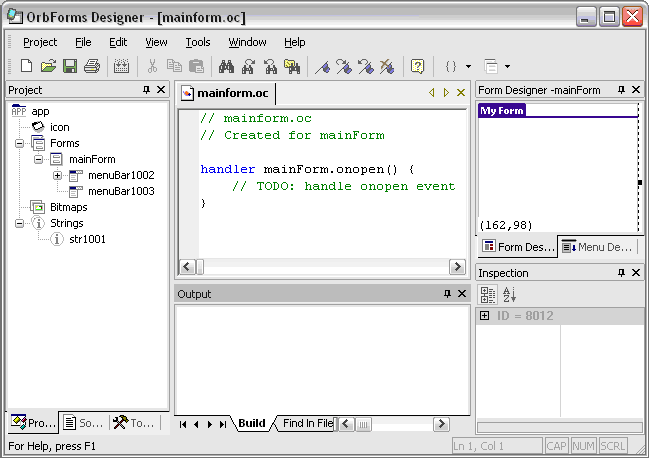
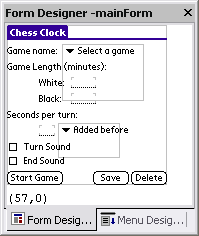
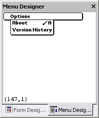
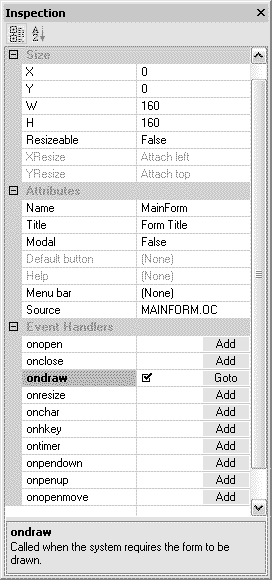

The OrbForms Designer environment consists of many tools to increase your productivity while creating applications - a Workspace bar containing the project view and source view, a Visual Designer for manipulation forms and controls, an Inspection bar listing properties of the current object, and Output bar showing build output, and a Source editor window for creating your application's source code.

The Project view of the Workspace bar contains all of the resources in your application displayed in a tree. Selecting an item will display its properties in the Inspection bar, allowing you to edit it's attributes. Right-clicking on an item will display a menu of operations that can be performed on the item.
Each project can have following resources:
The Source view of the Workspace bar contains all the source code in the application, including gadget files. Right-click a source file to move it up or down in the list, which controls the order in which the files are compiled and the functions and objects are defined. Double-clicking a file will open it and display a list of the functions, methods, handlers, and objects defined in the file. Double-clicking one of the functions, etc. will jump to the function in the source editor.
Each project can have following type of source files:
The Form Designer is the place where the user interface is created and tweaked. The view displayed in the Form Designer is very similar to the way the application will appear on an actual device (some controls are drawn slightly differently to make them easier to edit, such as the field control).
|  | Key Features: Drag and drop controls - click the left mouse button to select a control, and hold the mouse to move the controls to the desired position on the screen. The control's position is relative to the form position. If the Form designer's grid snap is enabled, the control movements are snapped to the closest point on the grid. Select controls -
Add controls - right click on the form, and select a list of the possible controls can be added to the form. Remove controls - There are two ways to remove controls from the designer.
Organize controls' Z-order - controls can overlap each other. Control's Z order determines which control is drawn on the top. The control's Z order can be modified by right click on the control and select Move Up or Move Down. Align multiple controls: Select multiple controls, and right click on anyone of them will display a context menu that has following choices:
Copy/Paste controls: Select one more multiple controls, and press key Ctrl+C for Copy and Ctrl+V for Paste. Undo/Redo actions: To undo the last action, press key Ctrl+Z. To redo the last action, press key Ctrl+Y.
|
The Menu Designer is the place where the menu bar is created and tweaked. The view displayed in the Menu Designer is very similar to the way the application menu bar will appear on an actual device. The menu items can be dragged and dropped.
|  | Key Features: Drag and drop menu items - click the left mouse button to select a menu item, hold the mouse to move the menu item to the desired menu on the screen, and let go. The menu item will be inserted into the picked menu. Copy/Paste menu items: Select one more multiple menu items, and press key Ctrl+C for Copy and Ctrl+V for Paste. Undo/Redo actions: To undo the last action, press key Ctrl+Z. To redo the last action, press key Ctrl+Y.
|
The Inspection bar shows the properties of the currently selected object. The Inspection Bar, Workspace Bar, and Visual Designer are synchronized - selecting an object in the Workspace Bar shows the properties in the Inspection Bar; changing a property in the Inspection Bar will affect the display in the Workspace Bar and Visual Designer.
|  | Key Features: Property Display: display selected project item's property. A property can have a dependency on another property. When a property is enabled, the Inspection property viewer will enable its dependent properties. For example: When a form's Modal property is set to False, Default Button and Help properties are disabled. Customize Event Handling: allows the user to go to a customized event handler function or automatically generate the handler code. When the source file is saved, the event handler properties are dynamically updated. Built-in Help: When a property or event handler is selected, its description is displayed on the bottom panel. Input Error Detection: Property's input values are validated. For example, if a string is entered in the position property X, Y, W, H, an error message will popup and indicating the input is not valid. Sort Property by Name: The properties can be displayed sorted base on their names. |
The Output bar displays the results of the most recent build, including the last error encountered.
The Source Code Editor is a syntax-coloring editor. When an error occurs when attempting to build the project, a balloon will appear at the location of the error to show you exactly what went wrong.